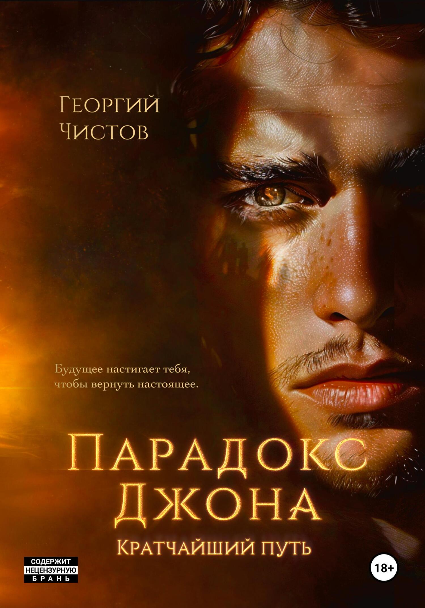
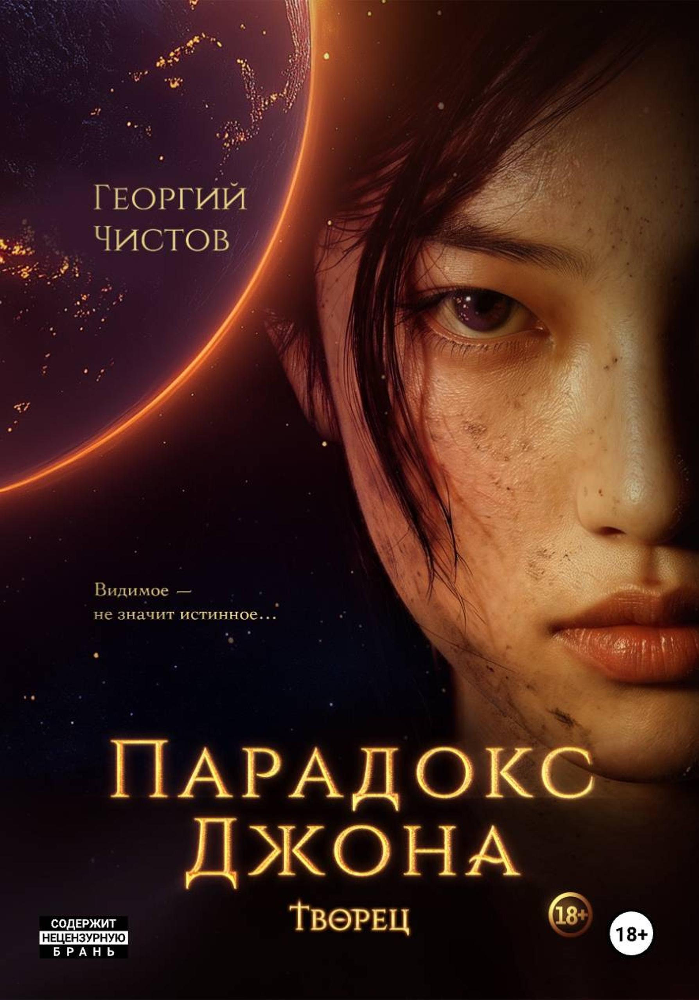
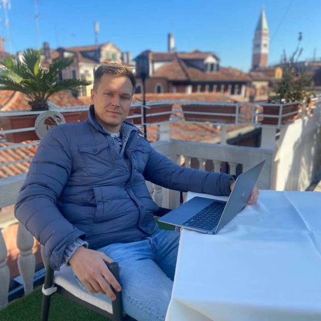

Живые задачи, а не слайды
Георгий берёт настоящие задачи и показывает, что с ними делает нейро‑помощник:
- Структура книги
- Письмо издателю
- Свой сайт
- Сценарий
- Приложение для вашего бизнеса
- Письмо в банк
- Судебная претензия



Книга. Жизнь. Доход.
Узнайте, как сделать своих ИИ‑помощников, которые могут забрать всю вашу рутину вокруг книги, в личных и рабочих делах, а также какой доход они могут вам принести
Вы поймёте, что изучение нейросетей – это увлекательный творческий процесс, который экономит ваше время и деньги в любой сфере жизни.
Георгий берёт настоящие задачи и показывает, что с ними делает нейро‑помощник:
Писательские, рабочие, житейские. Стыдных вопросов нет:
Уйдёте с пониманием, какой нейро‑помощник нужен именно вам и что изменится, когда он появится: сколько часов и денег он вернёт.
Так это выглядит у Георгия уже больше года. На практикуме покажем, с чего начать вам.

14 нейро‑помощников работают у клиентов, за это ему платят уже год:
Поэтому на практикуме не будет «в теории так можно». Всё, что Георгий покажет, он делает сам каждый день – для своих книг, для своей семьи и за деньги для заказчиков.
Что нейросеть делает с рукописью, не трогая ни одного вашего слова
Личный нейро‑помощник, который разбирается в бумагах и ничего не забывает
Продвижение, клиенты и новые источники дохода – без армии подрядчиков
По 10 задач на каждый трек – книга, жизнь, доход. Что можно отдать нейросети уже завтра и сколько это возвращает.
Девять нейросетей, шестнадцать умений в одной таблице – и как читать её под свою задачу: книга, бумаги, работа.
Нейросети не заменят людей. Но они могут заменить тех, кто пока не владеет ими.
Только суть. Без воды.
Текст книг по‑прежнему пишет автор: нейросеть не написала в них ни одной фразы.
14 агентов уже работают у его клиентов. Нейро‑помощник помнит вашу книгу, ваши дела и вашу манеру – и делает работу, на которую у вас уходили вечера. На практикуме увидите, как такие агенты работают у писателей, экспертов, предпринимателей и в личной жизни, и поймёте, какой нужен вам.
 N°02
N°02 N°04
N°04 N°03
N°03 N°05
N°05 N°01
N°01Ссылку на вход получат только зарегистрированные – за час до каждого вечера, на почту и в чат.
«Сценарная комната – это просто супер! Это скачок на порядок выше всех вещей, которые сейчас есть!»
«Это невероятно! Я делала 2 сайта. Я поражена результатом. Шрифты, структура, цветовая палитра, удобство.»
«Здорово! Хочу такого редактора!»
«Интересно именно мнение практика, а не постоянных рекламных кампаний.»
«Георгий – огонь!! 👍 Спасибо огромное за эфир! Очень интересно!»
«Вообще гениально! Хоть один человек правду сказал.»
«Спасибо за эфир: практично! И спасибо за возможность задать вопросы в прямом эфире.»
«Очень крутой вебинар. У нас ещё есть надежда, спасибо, Георгий! Нас спасёт наш творческий дух!»
«Встреча ценнейшая. Есть желание!»

«Благодаря нейросетям я сейчас в США. В прямом смысле. Первую книгу издавал три месяца, с корректором за 45 тысяч. Вторую выпустил за месяц – вместе с переводом и трейлером. И нейросеть не написала в моих книгах ни одной фразы».
Георгий Чистов – писатель, автор дилогии «Парадокс Джона» («Кратчайший путь», «Творец»). Сейчас в Тампе: издаёт книги на английском и показывает продюсерам сценарий по ним. Работает с нейросетями каждый день – над книгой (всё, кроме самого текста), документами, поездками и бизнесом клиентов.

СГСергей Гончаренко, сооснователь и директор GetPublishED, ведёт практикум вместе с Георгием.
Да. Все три вечера бесплатны, одна регистрация – на все три.
13, 14 и 15 октября в 19:00 по Москве, прямой эфир в GetCourse. Ссылка придёт на почту и в чат за час до начала каждого вечера. Смотреть можно с компьютера или с телефона.
Приходите на второй и третий: каждый вечер – отдельная тема. Вторник – книга, среда – жизнь, четверг – доход.
Поймёте. Георгий тоже не айтишник – он писатель. Это не сложнее, чем когда‑то освоить смартфон, а всё сложное берём на себя мы.
Да. Второй вечер – о личных делах: суд, банк, виза, врач, напоминания. Третий – о работе и доходе для экспертов и предпринимателей.
Нет. Текст остаётся вашим. Нейро‑помощник берёт на себя всё вокруг текста: замечания, перевод, иллюстрации, продвижение.
По 10 задач на каждый трек – книга, жизнь, доход. Что можно отдать нейросети уже завтра и сколько это возвращает.
Девять нейросетей, шестнадцать умений в одной таблице – и как читать её под свою задачу: книга, бумаги, работа.
Три вечера, чтобы увидеть, сколько времени и денег возвращают нейро‑помощники, – и понять, какой нужен вам.